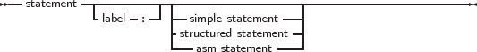

The heart of each algorithm are the actions it takes. These actions are contained in the statements of a program or unit. Each statement can be labeled and jumped to (within certain limits) with Goto statements. This can be seen in the following syntax diagram:
_________________________________________________________________________________________________________
Statements

___________________________________________________________________
A label can be an identifier or an integer digit.